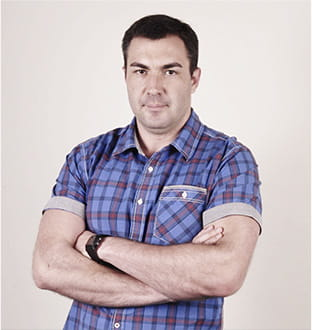

<div class="section12">
  <section class="section-expert">
    <div>
      <h2 class="section-expert__title">[ для записи - курса _ ]</h2>
      <p class="section-expert__deck">
        Мы привлекли одного из лучших
        <span class="section-expert__deck--blue">экспертов по разработке сайтов в СНГ: Александра Лущенко - </span
        >любимого преподавателя студентов-новичков
      </p>
    </div>

    <div>
        
      </div>
    <ul class="section-expert__list">
      <li class="section-expert__item">
        <h3 class="section-expert__item--title">front-end senior developer</h3>
        <p class="section-expert__item--deck">С опытом 10 лет в разработке</p>
      </li>
      <li class="section-expert__item">
        <h3 class="section-expert__item--title">разработал бизнес-решения в web</h3>
        <p class="section-expert__item--deck">
          Для реализации инициативы Барака Обамы «THE PRECISION MEDICINE
          INITIATIVE»
        </p>
      </li>
      <li class="section-expert__item">
        <h3 class="section-expert__item--title">7' лет преподавания</h3>
      </li>
      <li class="section-expert__item">
        <h3 class="section-expert__item--title">9,3 из 10</h3>
        <p class="section-expert__item--deck">Уровень удовлетворенности его студентов</p>
      </li>
    </ul>
  </section>
</div>
